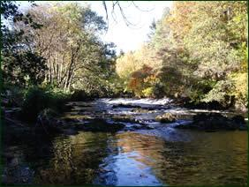

The Banks of the Earn
Teetotalism instead of Jacobitism
Lyrics by Carolina Oliphant, Lady Nairne
TuneScottish reel composed by Alexander Walker
Titled "Banks of Earn" (A Collection of Strathpeys, Reels and Marches N°196 p.67, first published 1866)
Contributed by Jack Campin (Mudcat Discussion Forum)
Sequenced by Ch. Souchon


|
1. Fair shone the rising sky,
The dew drops clad wi' mony a dye, Larks lilting pibrochs high, To welcome day's returning. The spreading hills, the shading trees, High waving in the morning breeze; The wee Scots' rose that sweetly blows, Earn's vale adorning. 2. Flow on sweet Earn (*), row on sweet Earn, Joy to a' thy bonny braes, Spring's sweet buds aye first do blow Where thy winding waters flow. Thro' thy banks, which wild flowers border, Freely wind, and proudly flow, Where Wallace wights fought for the right, And gallant Grahams are lying low. 3. O Scotland! nurse o' mony a name Rever'd for worth, renown'd in fame; Let never foes tell to thy shame, Gane is thine ancient loyalty. But still the true-born warlike band That guards thy high unconquer'd land, As did their sires, join hand in hand, To fight for law and royalty. 4. Oh, ne'er for greed o' worldly gear, Let thy brave sons, like fugies, hide Where lawless stills pollute the rills That o'er thy hills and valleys glide. While in the field they scorn to yield, And while their native soil is dear, Oh, may their truth be as its rocks, And conscience, as its waters clear! (*) Earn: A river of Perth and Kinross, the River Earn emerges from the eastern end of Loch Earn at St Fillans. It flows 32 miles eastwards through Strath Earn, eventually meeting the River Tay at the head of the Firth of Tay near Bridge of Earn. |
1. Aimable ciel se découvrant
Rosée perlant ses arcs-en-ciel Alouettes qui par leur chant, Saluent le matin qui s'éveille. Monts qui s'étalent. Frondaisons, Dont la brise incline les formes; Et l'odorante rose dont, Le Val de l'Earn tout au long s'orne. 2. Coule, Earn (*), dont le doux bruissement Sur tes berges se fait entendre, Les premiers bourgeons du printemps Eclosent près de tes méandres. Ton rivage où des fleurs folâtres Font un cadre aimable à tes flots Vit, pour le droit, Wallace combattre. Les Graham ont là leurs tombeaux. 3. Ecosse, tant de noms célèbres On fait ton renom, ta fierté; Nul ne proclamera la perte De ton antique loyauté! Qu'à jamais tes troupes guerrières Gardiennes d'un sol insoumis, Pour défendre, comme leurs pères, Leur roi et leurs droits, soient unies. 4. Que nul or, nul calcul cupide Ne nous conduise à nous cacher, Tandis qu'un alambic distille De quoi polluer monts et vallées. Nous qui dédaignons la retraite, Et chérissons le sol natal, Nos coeurs soient, tels ses rocs, honnêtes, Et telles ses eaux, de cristal! (*) Rivière des pays de Perth et de Kinross, c'est un émissaire du Lac Earn à St Fillans. D'une longueur de 51 Km, elle irrigue la vallée de Strath Earn et rejoint à l'est la Tay à son embouchure dans le Firth of Tay près de Bridge of Earn. (Trad. Ch.Souchon(c)2006) |
|
This song seems at first to proclaim the cause of Scottish independence and Jacobitism: "the true-born warlike band That guards thy high unconquer'd land, As did their sires, join hand in hand, To fight for law and royalty."
But these allusions become quickly mixed up with very trivial concerns about illegal whisky distilling and its disastrous effects on landscape and people. A piteous conclusion, indeed, for the lofty Jacobite epic. |
Il semble au début que ce chant plaide la cause de l'indépendance écossaise et du Jacobitisme: "Qu'à jamais tes troupes guerrières Gardiennes d'un sol insoumis, Pour défendre, comme leurs pères, Leur roi et leurs droits, soient unies."
Mais, bien vite, ce sont des inquiétudes plus terre à terre qui s'expriment: le whisky distillé clandestinement et ses effets désastreux sur l'environnement et la santé publique. Un triste aboutissement, pour la noble épopée Jacobite! |